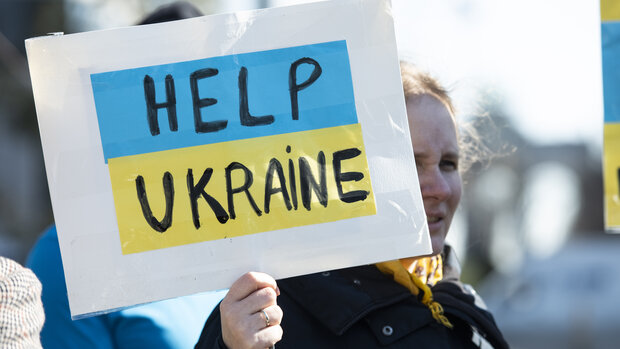
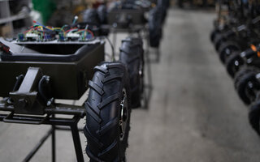
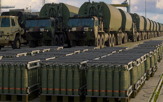

A database of military, financial and humanitarian aid to Ukraine.
Update June 4, 2026
European states maintained their military support for Ukraine at a high level and expanded drone-related aid allocations in particular. By contrast, financial and humanitarian aid allocations slowed markedly in the first four months of 2026, mainly due to delayed EU funding. The new Ukraine Support Tracker data, which cover aid allocations through April 2026, thus reveal a widening gap between military and non-military aid.

The Ukraine Support Tracker lists and quantifies military, financial and humanitarian support by governments to Ukraine since February 2022. It covers 41 countries, specifically the EU member states, other members of the G7, as well as Australia, South Korea, Turkiye, Norway, New Zealand, Switzerland, China, Taiwan, India, and Iceland. The database is intended to support a facts-based discussion about support to Ukraine.
We focus on government-to-government transfers into Ukraine. Due to a lack of comparable and reliable data, we do not quantify private donations or transfers by international organizations like the Red Cross. For more details see below. We are continuously expanding, correcting, and improving this project. We therefore very much welcome any help to improve the tracker. Feedback and comments on our paper and database are highly appreciated. You can contact us at ukrainetracker@kielinstitut.de or by using our online feedback form.
Team: Tilmann Hogrefe, Manon Funke, Federico Mellace, Taro Nishikawa, Jonas Schweigard, Christoph Trebesch
A main aim of this database to quantify the scale of aid to Ukraine and to make the support measures comparable across donor countries. Much of the discussion on aid to Ukraine since the beginning of the war has been anecdotal, while a rigorous quantification has been missing. Our aim is to quantify the support flows by Western governments to Ukraine in millions of Euros, accounting for both financial and in-kind transfers. To do so, we set up a comprehensive database that brings together information from official, government sources, existing lists of Ukraine aid, and reports by renowned news media.
An important challenge is to quantify non-financial transfers, such as in-kind shipments of military equipment, weapons, medicines or foodstuff. In many cases, governments report the value of their in-kind donations in their national currency, so that we can use that number as the baseline value. In other cases, however, governments do not report the value of aid, but only mention the items supplied, e.g., specific weapons or several "tons of foodstuff". To value these, we draw on a broad range of sources to identify market prices, choosing an upper bound, when possible, e.g., by using the new purchase price even if much of the military equipment is probably used.
The Ukraine Support Tracker lists and quantifies military, financial, and humanitarian aid pledged to Ukraine since January 24, 2022. It covers 41 countries, specifically the EU member states, other members of the G7, as well as Australia, South Korea, Turkiye, Norway, New Zealand, Switzerland, China, Taiwan, India and Iceland. Also, EU institutions are included as a separate donor. The tracker lists government-to-government support; private donations or those from international organizations such as the IMF are not included in the main database. Flows going into other countries like, for example, Moldova, are not included. The database does not include other types of support, in particular donations by private individuals, companies, churches, or non-governmental organizations. We have also not (yet) systematically collected support by international organizations like the Red Cross or the United Nations, mainly because a lack of systematic data and reporting by most such international organizations.
The Ukraine Support Tracker is constantly being expanded, corrected and improved. Suggestions are very welcome and can be sent to ukrainetracker@kielinstitut.de or via online feedback form.

News11.03.2026
News10.12.2025